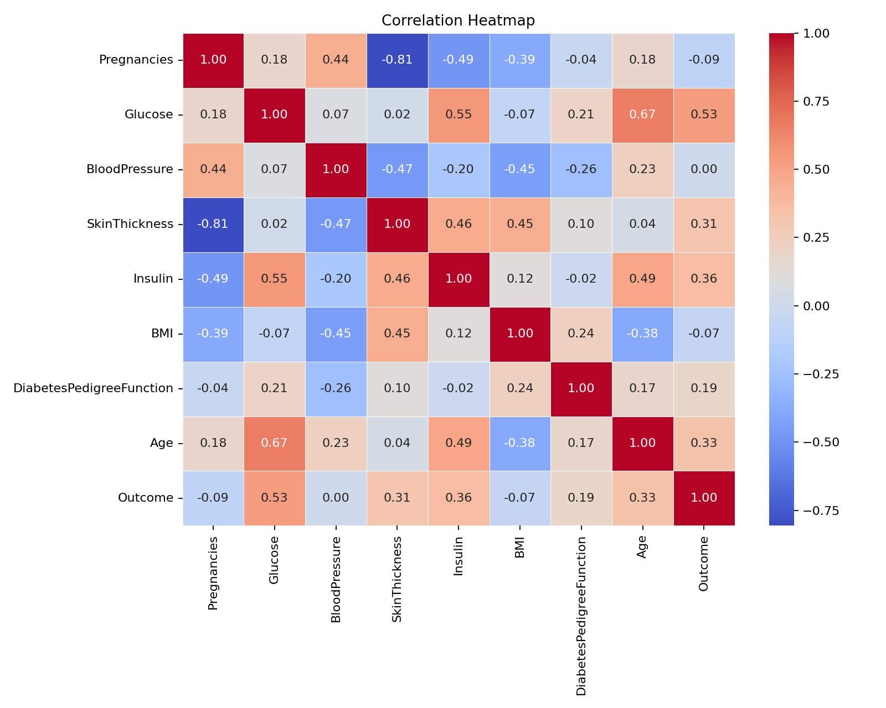
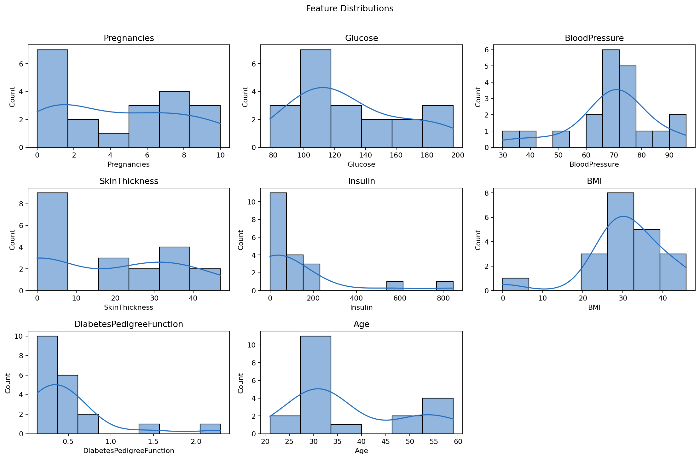
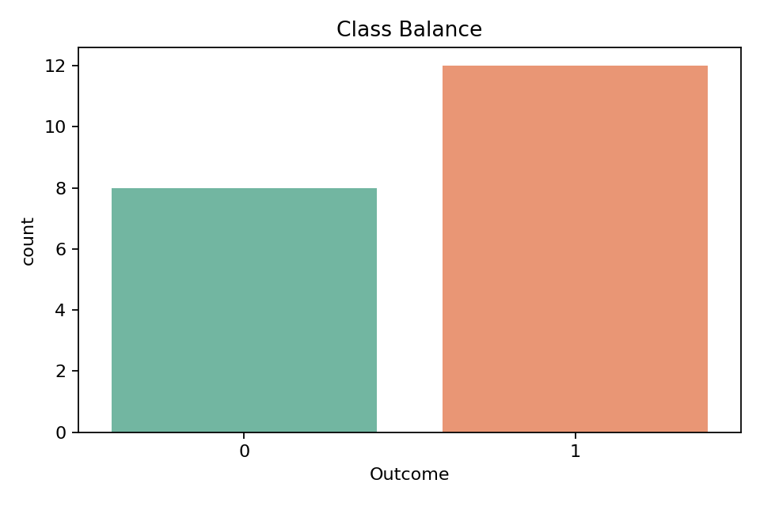

Done
- Dataset loaded from CSV
- Data cleaning pipeline
- EDA notebook
- HTML and CSS dashboard
ML classification | Python + Scikit-learn
Project Roadmap
Handle missing values, fix zero-value anomalies in glucose and BP columns, and check data types.
Create a correlation heatmap, distribution plots, and class balance chart for README images.
Walk. Hydrate.
Apply StandardScaler normalization, create an 80/20 split, and prepare X and y.
Train Logistic Regression and Random Forest, then print accuracy and confusion matrix.
Pipeline
Model Metrics
EDA Outputs



Commands
python -m venv .venv
.\.venv\Scripts\activate
pip install -r requirements.txt
python src\run_pipeline.py --input data\raw\diabetes.csv